튜브워커 프롬프트 엑셀 두 개로 인물시트부터 야담 씬 이미지까지 한 번에 일괄 생성
| ① 씬이미지 엑셀 | 튜브워커 → 이미지 단계 → [야담] 이미지 프롬프트 다운로드 |
|---|---|
| ② 턴어라운드 엑셀 | 튜브워커 → 이미지 단계 → [야담] 인물시트 프롬프트 다운로드 |
튜브워커에서 작업 중인 영상의 이미지 단계로 갑니다. 인물 시트가 모두 대기 상태여도 괜찮습니다. 화면 맨 아래에 [야담]으로 시작하는 버튼들이 보이면 준비 완료입니다.
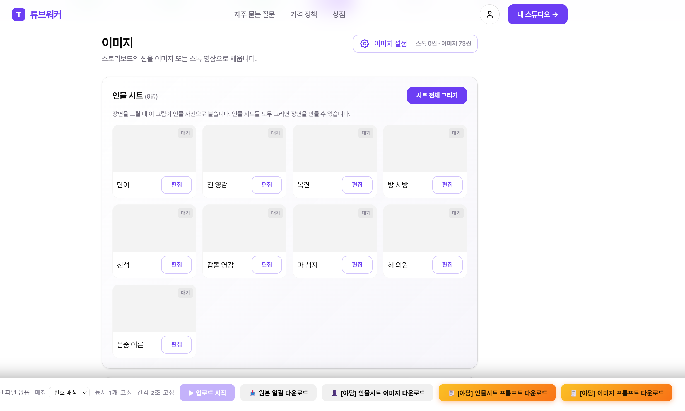
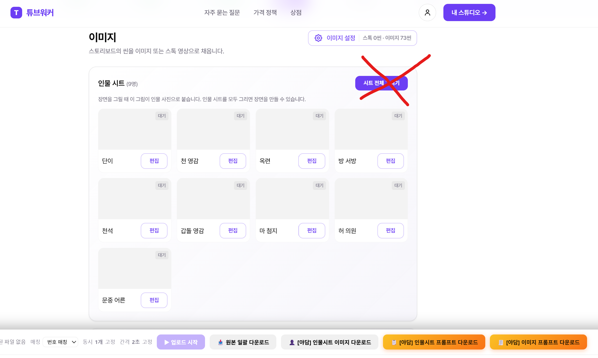
화면 맨 아래 오른쪽의 주황색 버튼 두 개를 차례로 눌러 엑셀 파일 두 개를 받습니다.
| [야담] 인물시트 프롬프트 다운로드 | → (② 턴어라운드) …xlsx |
|---|---|
| [야담] 이미지 프롬프트 다운로드 | → (① 씬이미지) …xlsx |
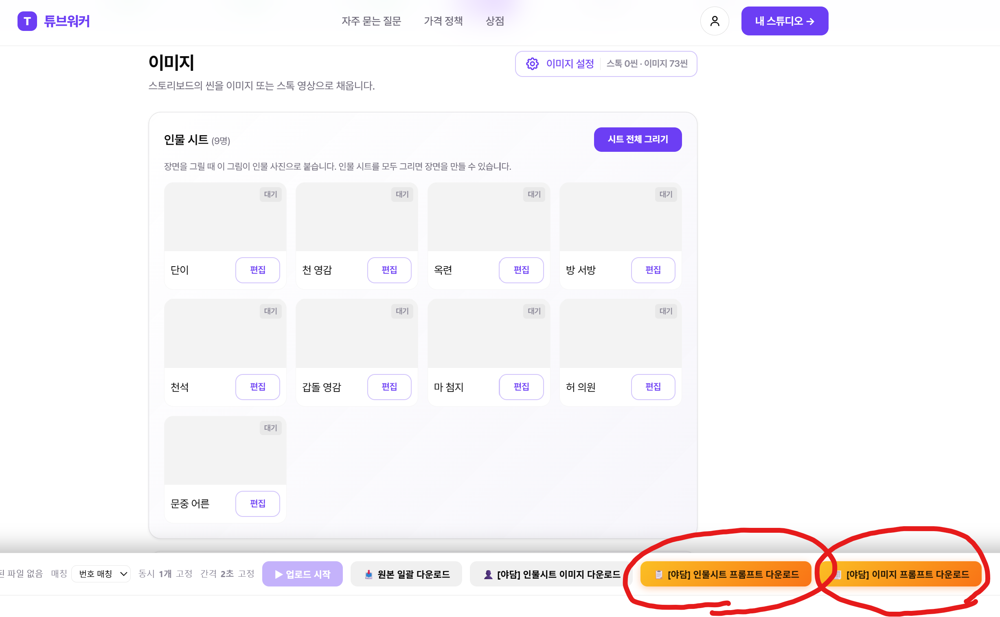
후파의 야담플로우에 접속합니다. 처음에는 이미지 스튜디오 탭이 열려 있습니다.
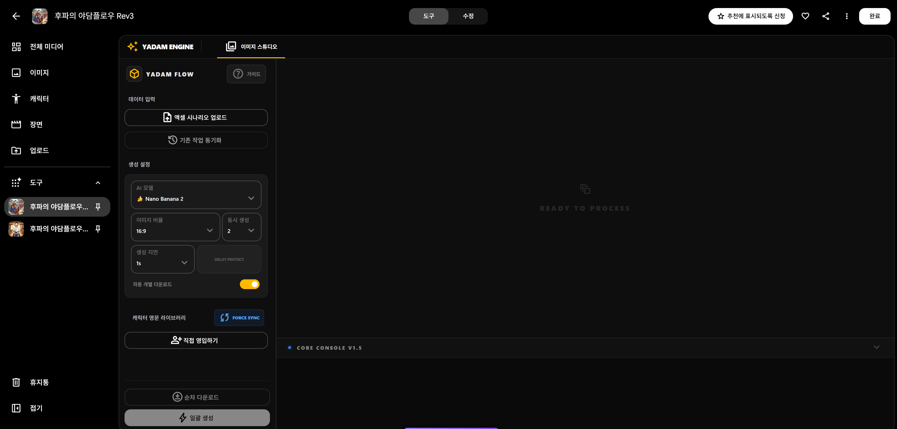
이전에 작업했던 이미지를 다시 불러오는 버튼입니다. 새로고침을 했거나 창을 닫았다가 다시 들어왔을 때, 이미 만든 이미지를 불러와 이어서 작업할 수 있습니다.
왼쪽 데이터 입력의 엑셀 시나리오 업로드를 누릅니다.
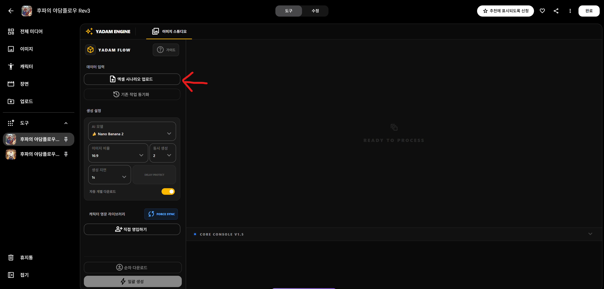
3단계에서 받은 파일 중 (① 씬이미지) …xlsx를 선택합니다. 올라가면 화면에 씬 목록이 나타나고, 위쪽에 턴어라운드 시트 생성기 탭이 새로 생깁니다.
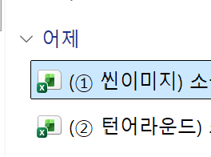
위쪽의 턴어라운드 시트 생성기 탭을 누릅니다.
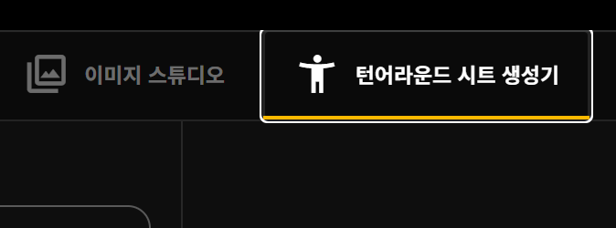
왼쪽 데이터 입력의 캐릭터 엑셀 업로드를 누릅니다.
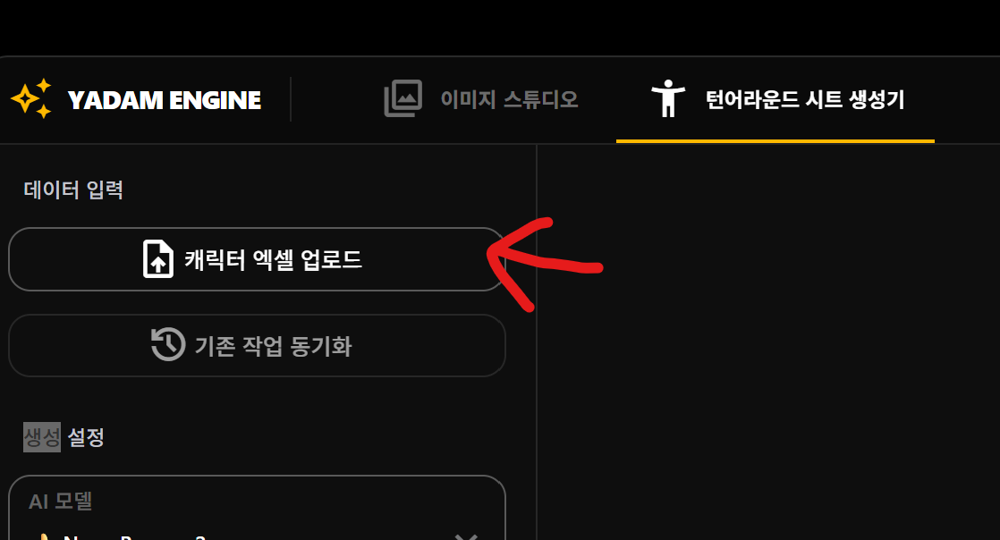
이번에는 (② 턴어라운드) …xlsx를 선택합니다.
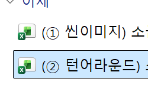
아래 콘솔에 "N명의 캐릭터 정보를 엑셀에서 불러왔습니다"가 뜨면, 왼쪽 맨 아래의 ⚡ 일괄 생성 시작을 눌러 인물시트를 그립니다.
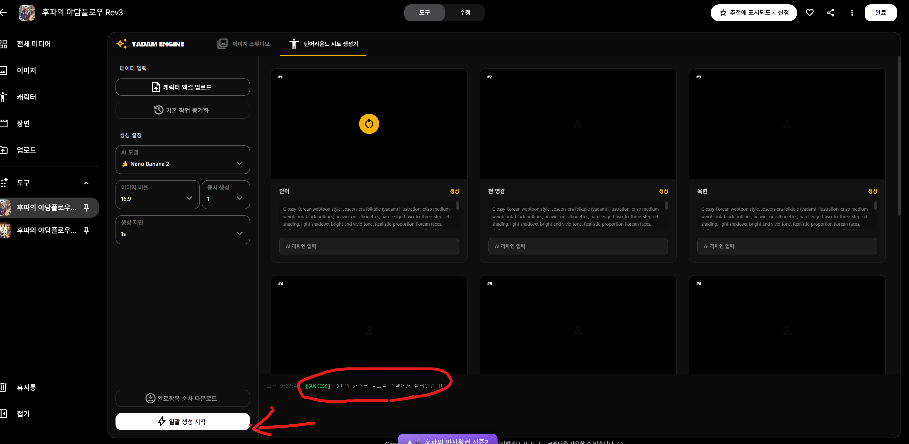
인물시트가 다 그려지면 이미지 스튜디오 탭으로 돌아옵니다. 왼쪽 캐릭터 영문 라이브러리에 인물시트가 자동으로 들어가 있고, 콘솔에 "턴어라운드 캐릭터 N개를 라이브러리에 연결했습니다"가 표시됩니다.
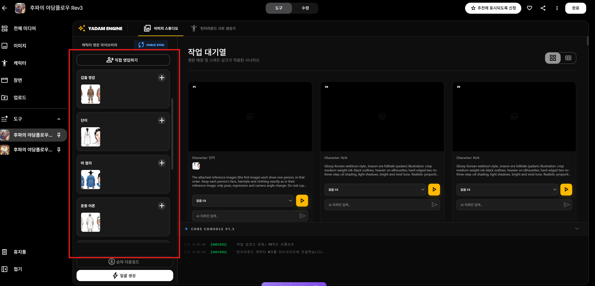
씬 카드에 Character: N/A라고 나오는 씬은 등장인물이 없는 씬(풍경·사물 등)입니다. 인물시트 없이 프롬프트만으로 그려지니 그대로 두면 됩니다.
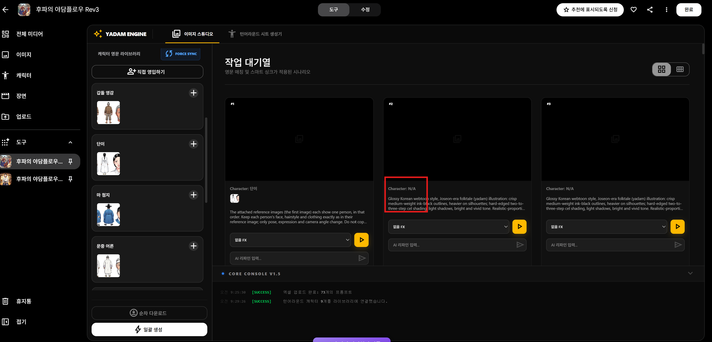
왼쪽 맨 아래의 ⚡ 일괄 생성을 누르면 모든 씬의 이미지 생성이 시작됩니다. 다운로드 방법은 자동 개별 다운로드 설정에 따라 다릅니다.
| 자동 개별 다운로드 ON | 이미지가 하나 생성될 때마다 자동으로 다운로드됩니다. 따로 누를 것이 없습니다. |
|---|---|
| 자동 개별 다운로드 OFF | 이미지가 모두 완성된 뒤 순차 다운로드를 누르면 한 번에 받을 수 있습니다. |
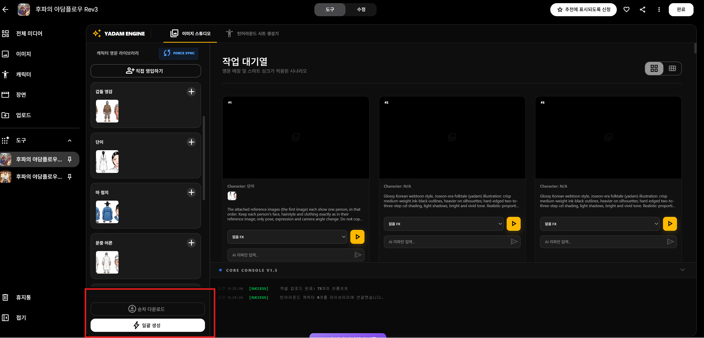